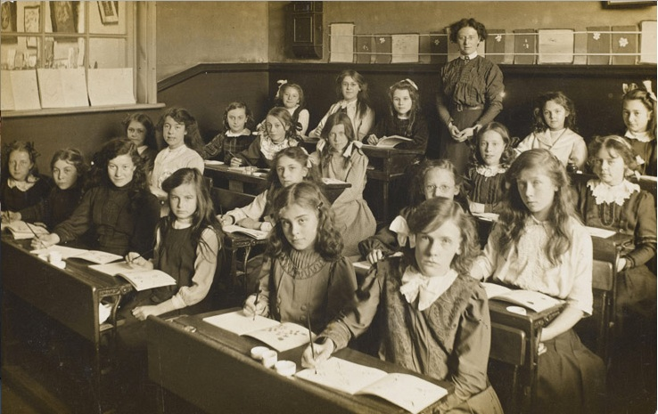

3.2 As origens do modelo de design de sala de aula


Imagem: Southall Board, Flickr

Nossas instituições são um reflexo do tempo em que foram criadas. Francis Fukuyama, em sua obra monumental sobre desenvolvimento e declínio político (2011, 2014), destaca que as instituições que prestam serviços essenciais no Estado frequentemente tornam-se tão fixadas em suas estruturas originais ao longo do tempo que deixam de se adaptar e de se ajustar às mudanças do ambiente externo. Precisamos, portanto, examinar de modo particular as origens dos nossos sistemas educacionais modernos, porque o ensino e a aprendizagem nos dias de hoje ainda são fortemente influenciados pelas estruturas institucionais desenvolvidas há muitos anos. Assim, precisamos avaliar em que medida nossos modelos tradicionais de ensino presenciais continuam adequados para a era digital.
As grandes escolas, faculdades ou universidades urbanas, organizadas por faixas etárias, estudantes que se reúnem em grupos e unidades de tempo reguladas, eram perfeitamente adequadas para uma sociedade industrial. Em muitos aspectos, isso correspondia à forma como o trabalho era organizado nas fábricas. Na verdade, ainda temos um modelo predominantemente industrial de design educacional, que em grande parte continua sendo nosso modelo padrão de planejamento ainda hoje.
Alguns modelos de design estão tão arraigados na tradição e na convenção que frequentemente somos como peixes na água — apenas aceitamos que esse é o ambiente em que temos de viver e respirar. O modelo de sala de aula é um excelente exemplo disso. Nele, os aprendizes são organizados em turmas que se reúnem regularmente no mesmo local, em determinados horários do dia, por um período de tempo preestabelecido ao longo de um semestre letivo.
Essa é uma decisão de design que foi tomada há mais de 150 anos. Ela estava inserida no contexto social, econômico e político do século XIX. Esse contexto incluía:
- a industrialização da sociedade, que forneceu “modelos” para a organização do trabalho e da mão de obra, como as fábricas e a produção em massa;
- a migração de pessoas de atividades e comunidades rurais para as urbanas, com o aumento da densidade resultando em instituições maiores;
- a transição para a educação em massa para atender às necessidades dos empregadores industriais e a uma gama cada vez maior e mais complexa de atividades administradas pelo Estado, como governo, saúde e educação;
- a ampliação do direito ao voto e, consequentemente, a necessidade de um público eleitor mais instruído;
- ao longo do tempo, a exigência por maior igualdade, resultando no acesso universal à educação.
No entanto, ao longo de 150 anos, nossa sociedade mudou gradualmente. Muitos desses fatores ou condições não existem mais, enquanto outros persistem, mas muitas vezes de forma menos dominante do que no passado. Assim, ainda temos fábricas e grandes indústrias, mas também temos muitas outras empresas pequenas, maior mobilidade social e geográfica e, acima de tudo, um desenvolvimento massivo de novas tecnologias que permitem que tanto o trabalho quanto a educação sejam organizados de formas distintas.
Isso não significa que o modelo de design de sala de aula seja inflexível. Os professores usam há muitos anos uma ampla variedade de abordagens de ensino dentro dessa estrutura institucional geral. Mas, em particular, a forma como as nossas instituições são estruturadas afeta fortemente a nossa maneira de ensinar. Precisamos avaliar quais dos métodos construídos em torno de um modelo de sala de aula ainda são adequados na sociedade atual e, o que é um desafio maior, se poderíamos construir estruturas institucionais novas ou modificadas que atendessem melhor às necessidades de hoje.
Referências
Fukuyama, F. (2011) The Origins of Political Order: From Prehuman Times to the French Revolution New York: Farrar Strauss and Giroux
Fukuyama, F. (2014) Political Order and Political Decay: From the Industrial Revolution to the Globalisation of Democracy New York: Farrar Strauss and Giroux
Atividade 3.2 Pensando fora da caixa [da sala de aula]
Se as salas de aula, escolas e campus universitários são os produtos físicos de uma era industrial, que tipo de ambiente de aprendizagem seria produto de uma era digital? Em outras palavras, se estivéssemos começando do zero hoje, como você projetaria um ambiente de ensino e aprendizagem que refletisse a era em que vivemos?
Obviamente não há uma resposta certa ou errada para isso, mas mais tarde você pode querer consultar o Capítulo 6 sobre ambientes de aprendizagem para ver se seu ambiente de aprendizagem “digital” contém todos os componentes necessários.
Você também pode querer considerar o contexto social, econômico e político do século XXI para identificar um ambiente de aprendizagem apropriado. Até que ponto a experiência no campus ainda seria necessária? (Por exemplo, como o ambiente lidaria com os efeitos do excesso de tempo de tela no desenvolvimento das crianças?)
Ouça o podcast abaixo para minha resposta sobre isso:
Um elemento de áudio foi excluído desta versão do texto. Você pode ouvi-lo on-line aqui: https://pressbooks.bccampus.ca/teachinginadigitalagev2/?p=86